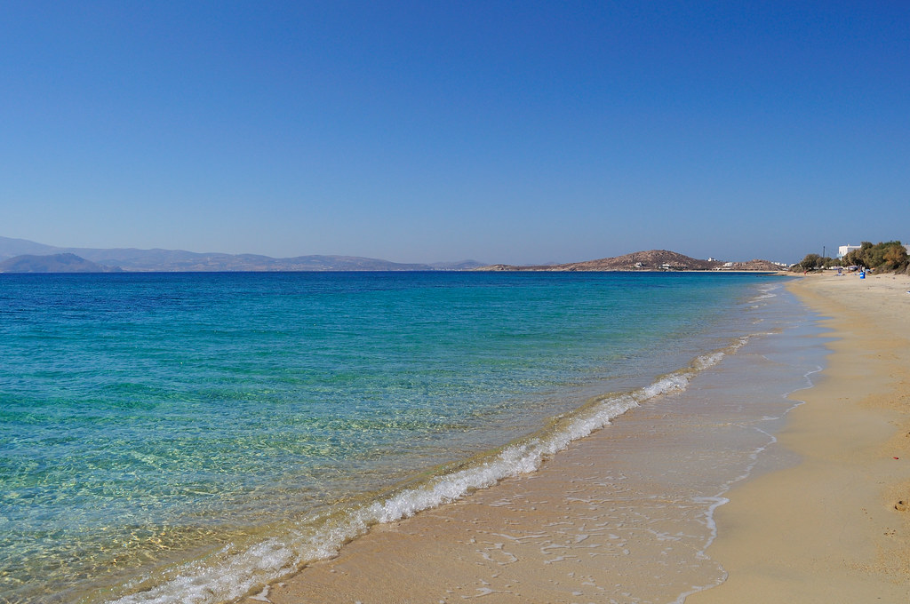
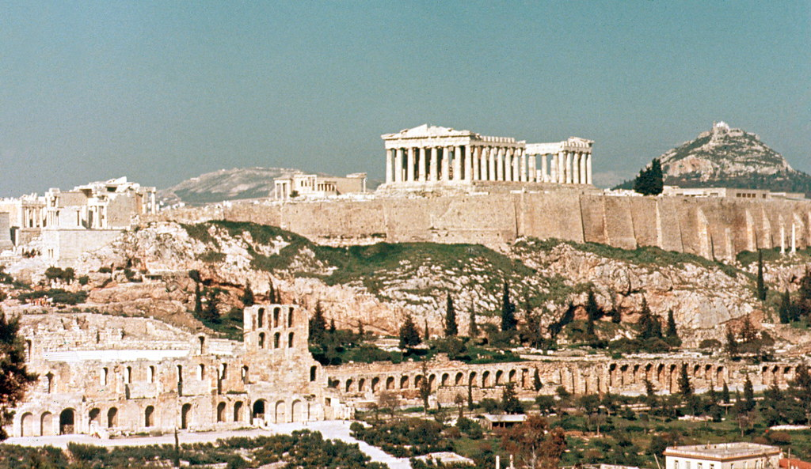

Greece is a beautiful country that borders the Mediterranean sea. Its stunning coastal landscape and beautiful beaches have made it a very popular tourist destination. Athens is a very popular city in Greece. Also, ancient Greek monuments are very popular among tourists. Boating and cliff jumping are also popular activities. Look below for some more information on Greece!

|
Santorini is an island in the southern Aegean Sea, about 200 km (120 mi) southeast from the Greek mainland. Santorini is renowned for its tradition in wine making and boasts vast vineyards and fine wine varieties. Its boutique wineries are a must as they offer the ultimate ambrosial experience. |
|  |
Plaka is a very popular beach on Naxos. It stretches some 15 min drive south of Naxos town, occupying an entire bay. The beach is pretty long, so you should be able to find sufficient space. |
|  |
The Acropolis of Athens and its monuments are universal symbols of the classical spirit and civilization and form the greatest architectural and artistic complex bequeathed by Greek Antiquity to the world. |